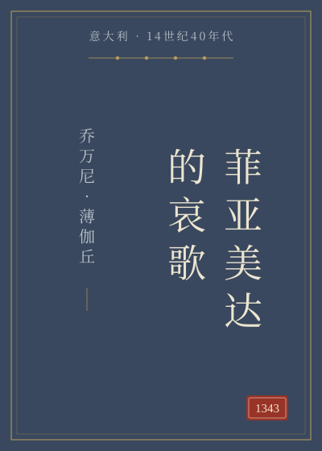
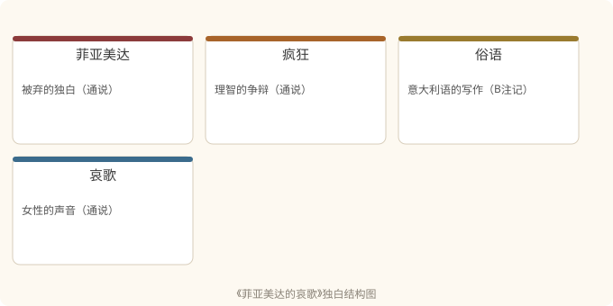

菲亚美达的哀歌
一、基本信息
| 作者 | 薄伽丘 |
|---|---|
| 成书/出版 | 作者页注记：Britannica 列举——菲亚美达的哀歌（俗语作品——年份通说待核） Giovanni Boccaccio — Encyclopaedia Britannica (by Umberto Bosco)（百科全书） |
| 国别/地区 | 意大利 |
| 时代 | 古代 · 14世纪40年代 |
| 体裁 | 散文爱情独白 |
| 语言 | 意大利语（俗语） |

《菲亚美达的哀歌》独白结构图（主题·结构图）
二、创作背景
作者页注记：菲亚美达的哀歌、科尔巴乔——'俗语作品（Britannica 列举）'。
Britannica：薄伽丘——《十日谈》作者（作者页交叉）。
题材（通说待核）：菲亚美达被帕姆皮诺抛弃的独白——'原型心理小说'说。
三、内容脉络
（通说待核）被弃女子的九日独白。
（通说待核）'疯狂'与'理智'的争辩。
四、主要人物表
| 人物 | 身份 | 说明 |
|---|---|---|
| 菲亚美达 | 独白者 | （B注记：Madonna Fiammetta） |
| 帕姆皮诺 | 负心人 | （通说待核） |
五、主题与艺术特点
- 被弃女性的内心（通说待核）。
- '俗语作品'（B注记）。
- 《十日谈》人物的重用（通说待核）。
六、影响与评论
- Britannica：'俗语作品'（作者页注记）。
Giovanni Boccaccio — Encyclopaedia Britannica (by Umberto Bosco)（百科全书） - Britannica：《十日谈》为代表作（作者页交叉）。
Giovanni Boccaccio — Encyclopaedia Britannica (by Umberto Bosco)（百科全书）
七、阅读建议
难点
- 早期意大利语。
- '独白'的文体源流。
- 《菲亚美达的哀歌》中译名（《菲亚美达的哀歌/疯女哀歌》）待核。
- 意大利文原版（公有领域）。
薄伽丘俗语作品；与《十日谈》《名女传》对读。
八、待核实
- 1343-44年写作年份待核。
- 菲亚美达/帕姆皮诺人名核对（通说）。
- '心理小说原型'评价待核。